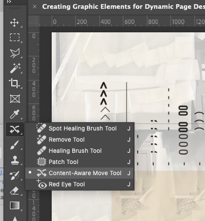
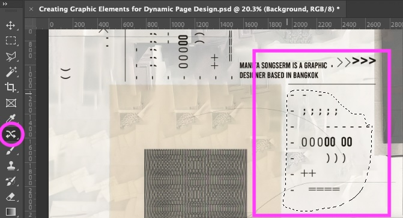
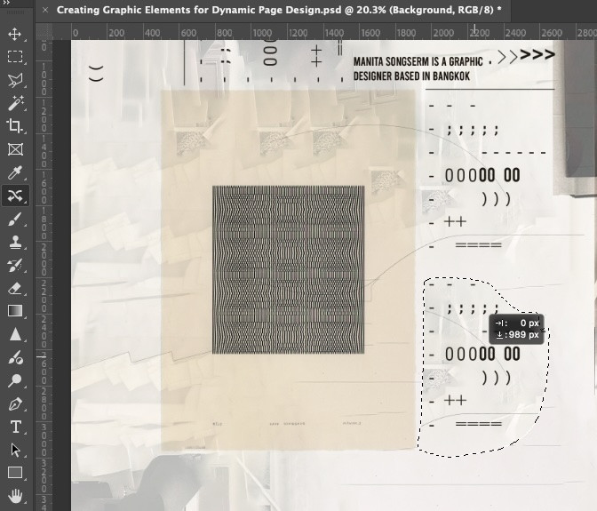
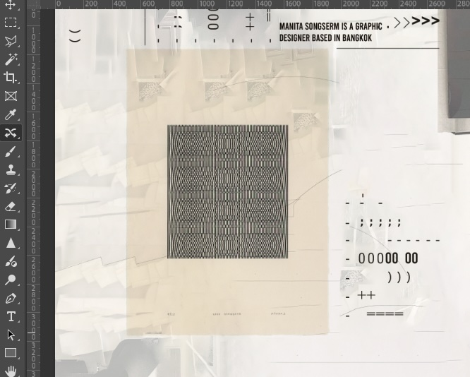
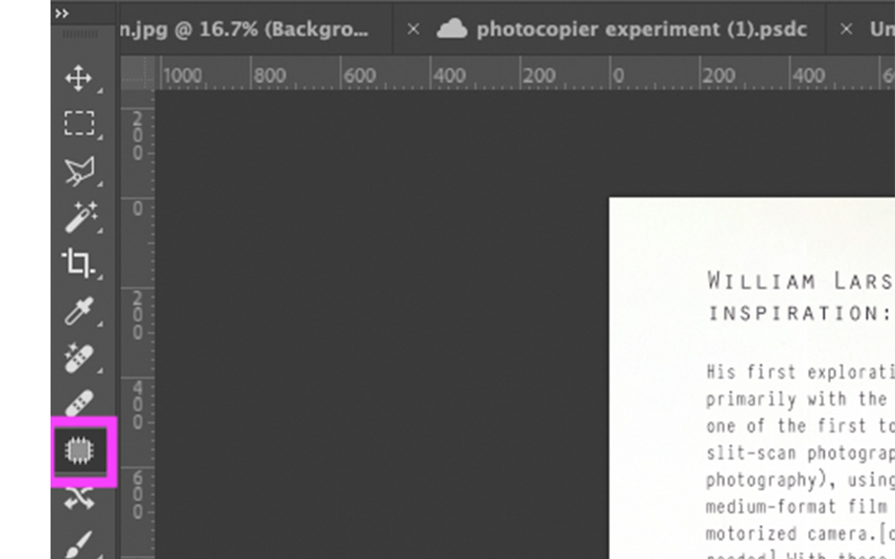
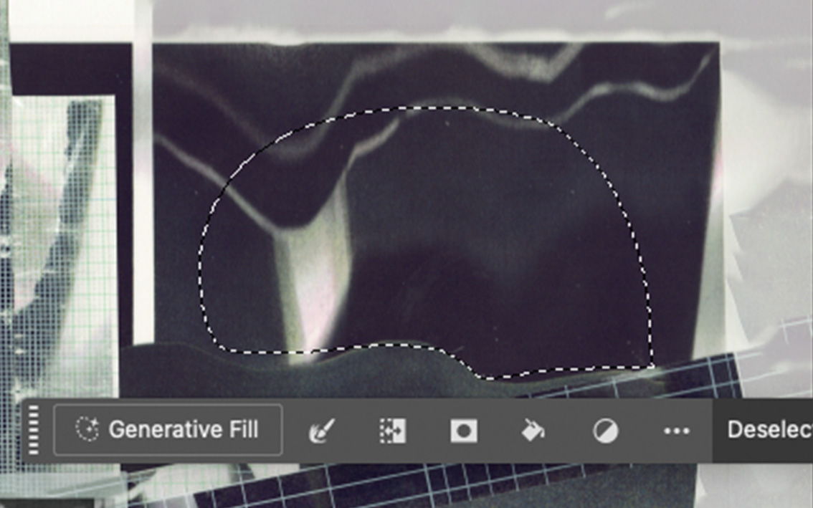
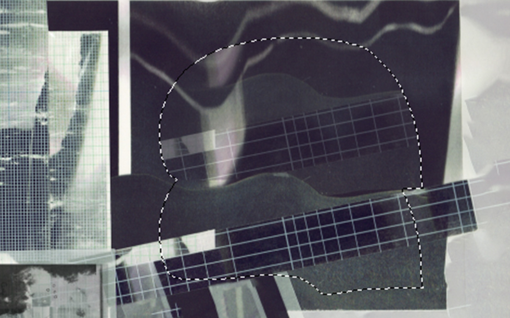
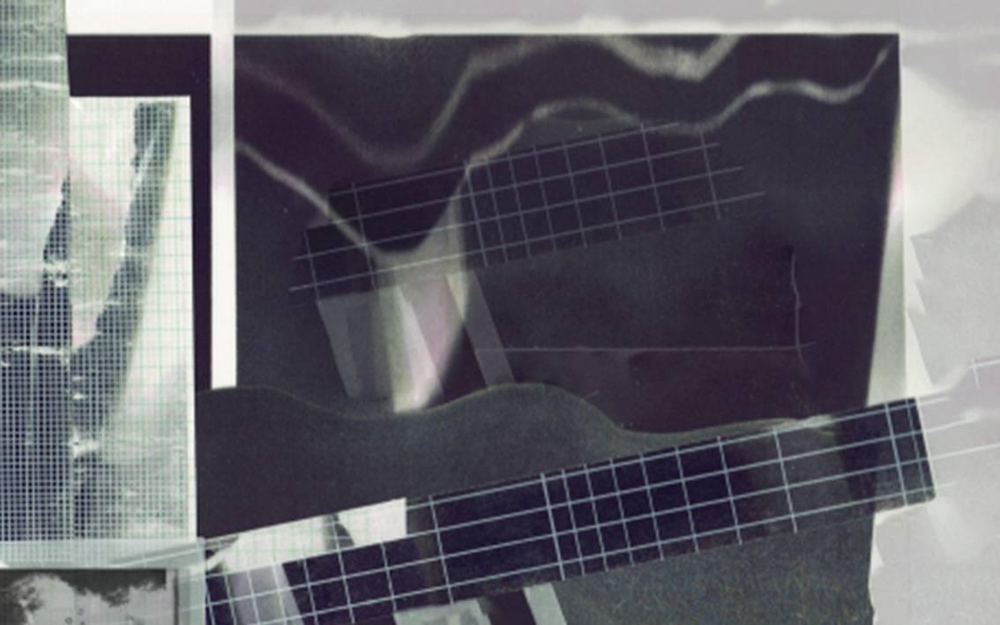

Digital Manipulation: Moving Elements & Displacement
Learn how to move and transform tape transfer elements in Photoshop for your fashion design projects.
Artist Inspiration: Contemporary Transfer Techniques


Transfer Techniques for Your Term 2 Project
Material Textures
Create transfers that explore textures related to your term 2 project.
Layered Design
Overlap transfers to create depth, similar to fabric layers in your designs.
Text Elements
Add text that connects to your design story or concept.
Make 3-4 different tape samples: Try different tapes (clear, matte, washi, masking tape) on various printed materials.
⚠️ Before Class: Make Tape Transfers
 Make 3-4 tape samples
Make 3-4 tape samples
 Scan at 300dpi
Scan at 300dpi
 Use laser prints only
Use laser prints only
 Bring digital files to class
Bring digital files to class
Step-by-Step: Digital Manipulation of Tape Transfers
The Content-Aware Move tool lets you reposition elements while automatically filling the background:
Select Content-Aware Move tool (J key)
Draw selection around element
Drag selection to new position
Photoshop blends the background
Use these selection tools to isolate specific parts of your tape transfers:
For selecting straight-edge shapes:
- Press L key
- Click points around object
- Connect back to start
- Copy: Cmd/Ctrl+C
- Paste: Cmd/Ctrl+V

For selecting similar colored areas:
- Press W key
- Set Tolerance (20-40)
- Click on area to select
- Shift+Click to add
- Alt/Option+Click to subtract

Always deselect when finished:
This removes the "marching ants" selection outline

Content-Aware Fill helps remove unwanted elements or fill empty areas:
Select area to fill using Magic Wand (W)

Go to Edit → Content-Aware Fill

Adjust sampling area with brush if needed

Click "OK" to apply the fill

The Patch Tool is perfect for fixing rough edges in your tape transfers and creating smooth blends:
Select the Patch Tool (J key, then toggle through)
Make sure "Source" is selected in the Options bar
Draw a selection around the area to fix (like a rough edge)
Click and drag the selection to a good source area to sample from
Release to blend the two areas seamlessly
Uses for Fashion Design:
- Clean Edges: Fix rough edges of tape transfers
- Blend Textures: Create smooth transitions between textures
- Extend Patterns: Copy texture from one area to another
- Mix Elements: Combine pieces from different sources
After moving elements, use blend modes to integrate tape transfers and add highlights:
Dodge Tool for Highlights
Lighten specific areas of your tape transfer elements:
- Select the Dodge tool (O key)
- Set Range to "Midtones" in the options bar
- Use a soft brush at 20-30% Exposure
- Paint over areas you want to lighten

Using Text with Your Fashion Elements
Aim: Make sure your text supports your images and feels professional and balanced.
Recommended Fonts:
Andale Mono - clean, technical look for fashion descriptions
Orator Std - balanced spacing, good for annotations
Grandview Display - modern, works well for headings
Typewriter Condensed - nostalgic, works with collage styles
- Keep the text size modest: 9 – 14 pt is usually enough for A3 print layouts.
- Use consistent spacing and alignment – left‑aligned or lightly centered text often works best.
- Avoid placing text directly over busy image areas – give it space or use a semi‑transparent shape behind it.
- Avoid overly decorative or "playful" typefaces that compete with your imagery.
Tip: Good text design shouldn't compete with your images — it should help tell the story, quietly.
Before Submitting Your Work:
 Check story connection
Check story connection
 Review layout quality
Review layout quality
 Save as PSD first
Save as PSD first
 Export as JPG
Export as JPG
Submitting to Padlet
All work must connect to your term two design project.
Task 1: Tape Transfers
Upload at least 3 tape transfer experiments:
- Use different tape materials (matte, clear, washi)
- Show texture variations/ images
Task 2: A3 Design Sheet
Create an A3 design sheet showing:
- At least 2 Photoshop techniques learned today
- Research connections like artist examples
- Good typography choices
- Clear connection to your term two project
Class Gallery & Submission Board
Part 1: Content-Aware Move Tool Steps
Drag and drop the steps in the correct order:
Drop steps here in order